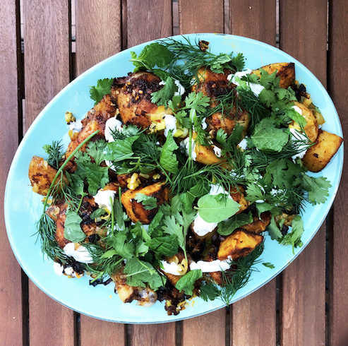

Harissa Chicken

Description
From Melissa Clark's cookbook Dinner, this has become a favourite of mine.
Chicken, potatoes, and leeks, are tossed with a spicy harissa paste and all cooked together on one pan. A spicy, sweet, hearbacious dish perfect for summer.
Ingredients
- 1 1/2 pounds bone-in, skin-on chicken thighs and drumsticks
- 1 1/4 pounds Yukon Gold potatoes, peeled and cut into 1 by 1/2-inch chunks
- 3 teaspoons kosher salt
- 3/4 teaspoon freshly ground black pepper
- 2 tablespoons harissa paste
- 1/2 teaspoon ground cumin
- 4 1/2 tablespoons extra-virgin
- olive oil, plus more as needed
- 2 leeks, white and light green parts, halved lengthwise, rinsed, and thinly sliced into half-moons
- 1/2 teaspoon grated lemon zest
- 1/3 cup plain yogurt, preferably wholemilk (if using Greek, thin it down with a little milk to make it drizzle-able
- 1 small garlic clover
- 1 cup mixed soft fresh herbs such as dill,
- parsley, mint, and/or cilantro leaves
- Fresh lemon juice, as needed
Steps
- Combine the chicken and potatoes in a large bowl. Season them with 2½ teaspoons of the salt and ½ teaspoon of the pepper. In a small bowl, whisk together the harissa, cumin, and 3 tablespoons of the olive oil. Pour this mixture over the chicken and potatoes, and toss to combine. Let it stand at room temperature for 30 minutes.
- Meanwhile, in a medium bowl, combine the leeks, lemon zest, ¼ teaspoon of the salt, and the remaining 1½ tablespoons olive oil.
- Heat the oven to 425°F.
- Arrange the chicken and potatoes in a single layer on a large rimmed baking sheet and roast for 20 minutes. Then toss the potatoes lightly and scatter the leeks over the baking sheet.
- Roast until the chicken is cooked through and everything is golden and slightly crisped, 20 to 25 minutes longer.
- While the chicken cooks, place the yogurt in a small bowl. Grate the garlic clove over the yogurt, and season with the remaining ¼ teaspoon salt and ¼ teaspoon pepper.
- Spoon the yogurt over the chicken and vegetables in the baking sheet (or you can transfer everything to a platter if you want to be fancy about it). Scatter the herbs over the yogurt, drizzle some olive oil and lemon juice over the top, and serve.